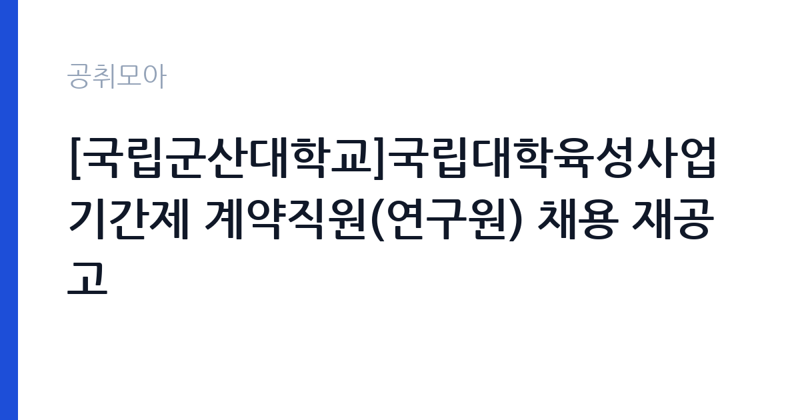

[국가기관] [국립군산대학교]국립대학육성사업 기간제 계약직원(연구원) 채용 재공고
국립군산대학교 · 전국 · 마감 2026-10-26 (D-9) · 출처 나라일터

한눈에 보는 모집 조건
| 기관 | 국립군산대학교 |
|---|---|
| 공고명 | [국립군산대학교]국립대학육성사업 기간제 계약직원(연구원) 채용 재공고 |
| 고용형태 | 기간제 |
| 근무지 | 전국 |
| 게시일 | 2026-10-16 |
| 마감일 | 2026-10-26 (D-9) |
지원자격, 이렇게 읽으세요
- 연구원 1명
- 접수 ~2026-10-26 마감
- 세부 조건은 원문 공고문 확인
국립대학육성사업 연구원은 사업 기획과 성과 관리 업무를 수행할 수 있는지를 봅니다. 공고문에는 별도의 전공 제한이 명시되어 있지 않지만, 대학 재정지원사업의 계획서 작성과 실적 보고서 정리에 익숙한 지원자가 실무에서 유리합니다. 계약직원이므로 국가공무원법상 결격사유가 없어야 하고, 최종학력 증명과 경력 증명을 제출해야 합니다. 자격 요건의 세부 기준은 첨부된 공고문 원문에서 확인하십시오.
이 공고의 포인트
국립대학육성사업은 교육부가 국립대학의 교육·연구 역량을 높이기 위해 지원하는 재정사업으로, 대학마다 사업단을 두고 자체 계획을 세워 집행합니다. 연구원은 이 사업의 기획, 예산 집행 관리, 성과지표 관리, 보고서 작성까지 폭넓게 관여합니다. 군산대는 새만금과 서해안 수산·해양 분야에 특화된 국립대라 사업 과제에도 지역 산업 연계 성격이 강합니다. 대학 행정과 사업 관리를 동시에 경험할 수 있는 자리입니다.
전형은 어떻게 진행되나
선발은 서류전형과 면접전형 2단계로 진행됩니다. 서류에서는 지원 자격 충족 여부와 사업 이해도를, 면접에서는 실제 수행 계획과 협업 태도를 확인합니다. 재공고인 만큼 접수 인원이 적을 가능성이 있어 서류 완성도가 상대적으로 큰 비중을 차지합니다. 최종합격자 발표와 임용 일정은 기획조정과 재정사업팀 안내를 따르며, 문의는 063-469-7308로 하면 됩니다.
원문에서 확인한 전형 방식
○채용직급: 연구원(1명) ○접수기간: 2026. 10. 19.(월) ~ 10. 26.(월) 17시 까지 ○선발방법: 서류 전형(1차) 및 면접 전형(2차) ○접수방법: 온라인 접수(https://kunsan.korus.kr) ○문의처: 국립군산대학교 기획조정과 재정사업팀(063-469-7308) * 기타 자세한 내용은 첨부파일 참고 바랍니다.
이런 분께 추천해요
- 대학 재정지원사업이나 국책사업 관리 경험이 있는 지원자
- 예산 집행과 성과보고서 작성에 익숙한 사무·연구 행정 인력
- 군산 지역에서 근무하며 사업 운영 전반을 배우려는 사람
지원 전 체크리스트
- 온라인 접수 사이트(kunsan.korus.kr) 회원가입을 마감 전에 미리 완료
- 마감이 오후 5시로 빠르므로 당일 오전 제출 권장
- 재공고로 변경된 요건이 있는지 이전 공고문과 비교
- 경력증명서에 사업 관리 경력을 구체적으로 기재
모집 일정과 제출 타이밍
접수 기간은 2026년 10월 19일(월)부터 10월 26일(월) 오후 5시까지입니다. 마감 시각이 오후 5시로 정해져 있어 저녁 제출은 불가능합니다. 서류전형 결과와 면접 일정은 접수 마감 후 개별 통지되며, 최종합격자는 학교 채용 사이트에 공고됩니다. 재공고 절차는 일정이 앞당겨지는 경우가 있으니 접수 직후 안내 메일을 확인하십시오.
직무 이해하기: 국가기관
연구원의 업무는 사업 계획과 성과 관리 두 축으로 나뉩니다. 연간 사업계획서에 담을 과제를 정리하고, 과제별 예산 편성과 집행 내역을 관리하며, 성과지표 달성도를 점검해 보고서로 만듭니다. 사업 참여 학과·부서와 자료를 주고받는 일이 많고, 교육부 제출용 서식에 맞춰 수치를 정리하는 작업도 비중이 큽니다. 군산대의 지역 연계 과제 특성상 새만금·수산 분야 사업 내용을 이해하면 업무 속도가 붙습니다.
자기소개서 작성 팁
자기소개서에는 사업 관리 경험을 수치로 드러내는 것이 좋습니다. 예를 들어 특정 사업의 예산 규모와 집행률을 관리한 경험, 성과지표를 재정리해 보고서를 통과시킨 경험을 구체적으로 쓰십시오. 국립대학육성사업이 무엇을 목표로 하는 사업인지 한 문단으로 설명할 수 있으면 준비도를 보여줄 수 있습니다. 재공고에 지원하는 이유는 솔직하게 적되, 사업 이해도와 연결해 설명하는 편이 자연스럽습니다.
면접 준비 포인트
면접에서는 사업 운영 상황을 가정한 질문이 나옵니다. 예산 집행률이 낮을 때 어떤 순서로 점검할지, 부서별 자료 제출이 늦어질 때 어떻게 조율할지 같은 실무 판단을 묻습니다. 성과지표를 어떻게 검증할지에 대한 질문도 가능합니다. 대학 조직의 의사결정 구조를 이해하고 있다는 점을 드러내면 좋고, 모르는 제도는 확인하겠다고 답하는 태도가 안전합니다.
급여·근무조건 읽는 법
보수는 국립군산대학교 계약직원 보수 기준에 따라 책정되며, 공고문에 급여와 수당 항목이 제시됩니다. 구체적인 금액은 원문에서 확인하십시오. 기간제 계약직은 계약 기간이 정해져 있고, 근무실적에 따라 재계약 여부가 결정되는 구조입니다. 세금과 4대보험을 공제한 금액이 실수령액이며, 초과근무 수당과 명절휴가비 등은 학교 규정에 따라 지급됩니다.
자주 묻는 질문
- 재공고에 지원해도 불리하지 않나요?
재공고는 접수 인원이 부족해 다시 공고하는 경우가 많아, 요건을 갖춘 지원자에게는 오히려 기회가 될 수 있습니다. - 계약 기간은 얼마인가요?
국립대학육성사업 수행 기간에 맞춰 계약이 정해지며, 정확한 기간과 재계약 조건은 공고문에 기재되어 있습니다. - 비전공자도 지원할 수 있나요?
공고문에 전공 제한이 명시되어 있지 않지만, 사업 관리와 문서 작성 역량이 실무에서 평가됩니다. 세부 요건은 원문을 확인하십시오.
함께 보면 좋은 공고
[국가기관] 임상연구과 제5차 전문연구원(다급 1명) 채용공고 — 마감 2026-10-25[국가기관] 2026년도 제1회 화성동탄우체국 공무직 우정실무원 채용시험 서류전형 결과 및 실기/면접시험 공고 — 마감 2026-10-20[국가기관] 2026년 제8회 화성동탄우체국 기간제 상시집배원 채용시험 재공고(봉담) — 마감 2026-10-23출처: 나라일터 공개정보를 바탕으로 공취모아가 정리한 안내글입니다. 모집 조건·일정은 변경될 수 있으니 지원 전 반드시 원문 공고문을 확인하세요. 본 글은 정보 제공용이며 합격을 보장하지 않습니다.